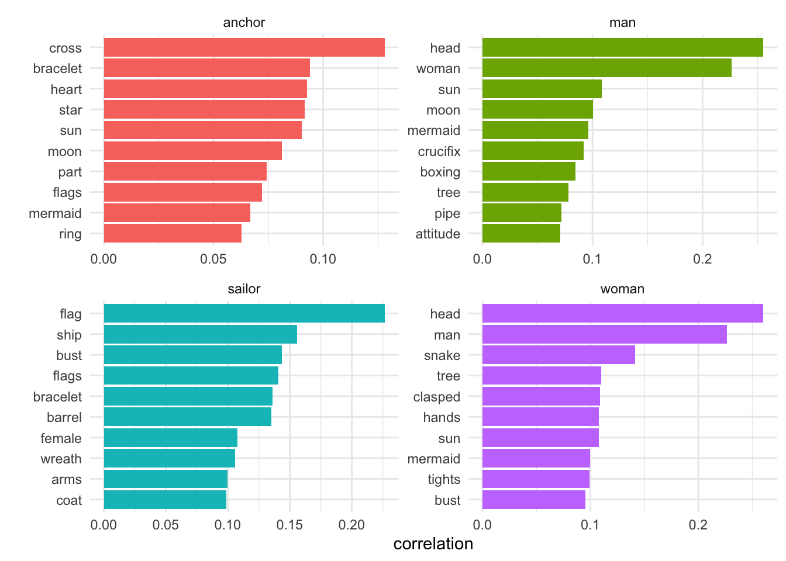
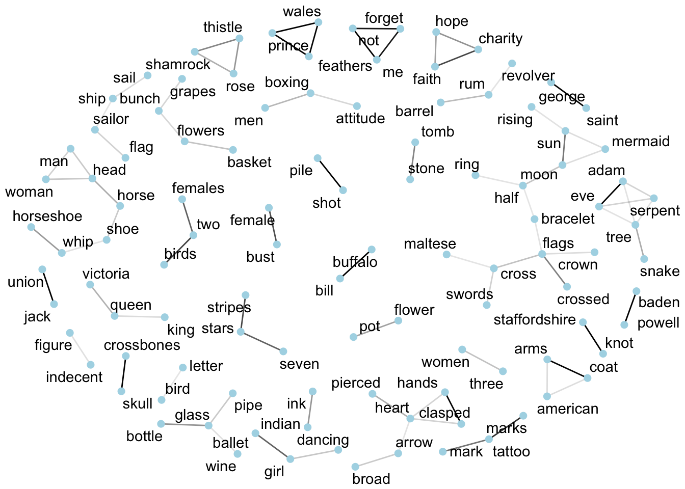
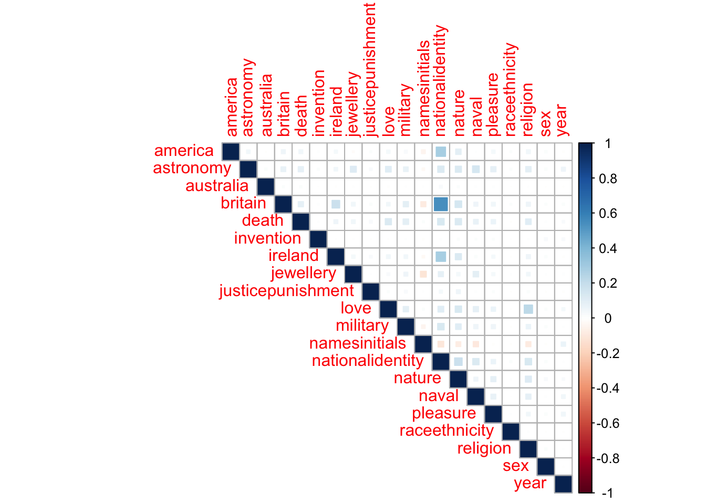
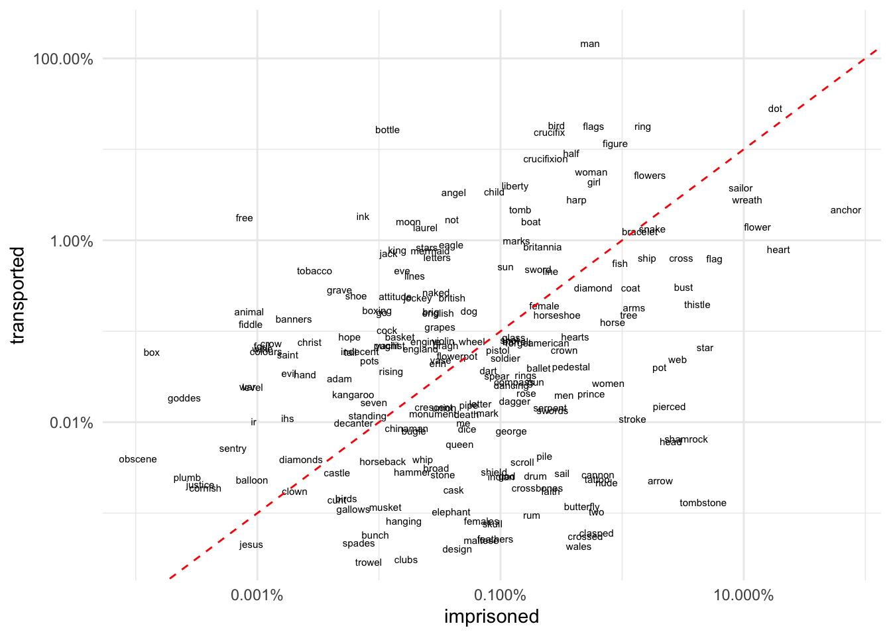

Tattoos Hackathon, 16 April 2019
Introduction
For the project’s data hackathon last month, I put together a few very exploratory slides. I’m currently working on more ideas, but I thought I’d put these up to whet a few appetites.
The data itself is still very much work in progress, so on this occasion I’m not going to share the dataset; sorry, you’ll just have to wait a bit longer! And these could change quite a bit by the time the data is finalised (so they really should not be treated as findings that could be cited in a publication!).
I think of the tattoos data as being more like, say, Twitter data rather than corpora of ‘big’ texts like novels. The vocabulary is relatively limited; descriptions are usually not full grammatical sentences. They contain quite small amounts of text. Tattoos themselves, in this analogy, are comparable to hashtags. And finally, there is a lot of associated metadata beyond the text itself - including who, where, and when, and links between the descriptions.
Two main challenges:
- analysing the language itself - collocations and correlations
- finding patterns with other variables eg gender, religion, change over time, etc
Designs: word correlations (selected words)
For several of these, I’ve borrowed ideas and code from the excellent Text Mining with R book.
Here, I compare the top co-occurring words for four high-frequency words in tattoo designs, using pairwise correlation. This means “how often they appear together relative to how often they appear separately” (so you don’t just get the most frequently occurring pairs at the top of the list).

Designs: word correlations
The same method is used to measure correlations between all words in designs so they can be visualised as a network and find out which designs/words are most likely to co-occur.
This shows only correlations above a certain threshold, but I forgot (ahem) to filter out very low frequency designs, so it includes some words that only occur once or twice in the whole dataset. The darker the lines (edges) between words, the stronger the association.

Subjects: correlation plot
“Subjects” are classifications being added to tattoos designs by the project team. The process is not complete and is of course very subjective and quite selective (reflecting research interests). So this graph is even more provisional than the rest (!), and I don’t think it’s particularly effective. But I wanted to try one out and see!
Interpreting the graph: Positive correlations (subjects appear together) are displayed in blue and negative correlations in red. Colour intensity and the size of the square are proportional to the correlation coefficients. A positive correlation of 1 = the subjects always appear together; a negative correlation of -1 = never together; 0 = equally likely to be together or apart.

Designs: comparing word use by punishment
This is probably my favourite new type of dataviz for comparing paired categories of words.
We go back to designs but now add another variable, a comparison of tattoo designs for transported v imprisoned convicts (which also has strong chronological dimension). First calculate word frequencies and divide the corpus into “transported” and “imprisoned”.
Interpretation:
- focus on the red line: words above this are associated more with transportation than with imprisonment; words below the red line are associated more with imprisonment
- the further from the red line, the stronger the association
- words towards the top right hand corner are higher frequency, towards the bottom left corner, lower frequency.
NB a limitation is that the graph will only show words that are in both transportation and imprisonment. This is not an issue when your corpus has very large numbers of unique tokens, but I think it makes it (sadly) less effective in this case.
(If it’s too small to see properly in your browser, right click on it and select “View Image” to see it at full size.)
